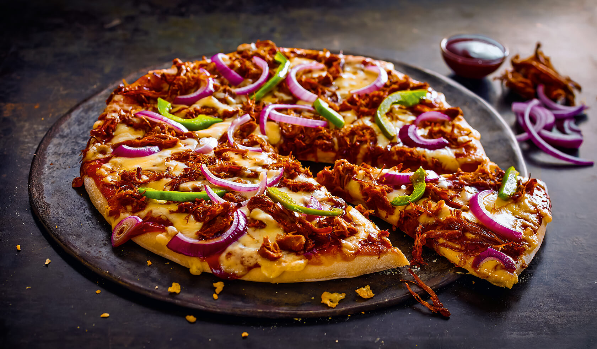

Pizza

-
wikipedia says:
- The history of pizza begins in antiquity, when various ancient cultures produced basic flatbreads with several toppings.
A precursor of pizza was probably the focaccia, a flat bread known to the Romans as panis focacius, to which toppings were then added.[1] Modern pizza developed in Naples when tomato was added to the focaccia in the late 18th century.
-